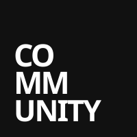

John Mandalas - About me
Hello, I'm John Mandalas, a student at the University of Waterloo. I am studying Computing and Financial Management - a highly competitive program which is a combination of Computer Science and Finance. I am an entrepeneur, student, and software developer. In my free time, I train mixed martial arts. I am open to new opportunities and collaborations, so please contact me below.
Experience

Community Agency Jun 2026 - Aug 2026 · 3 months- Software Engineer in the Finance and IT department at one of Toronto's premier design and marketing agencies with 80+ employees. Automated and created systems with AI, aiding in the creation of Remote Control.
Work Projects
-
GOLIATH: Financial tool which handles procurement and project based accounting for the agency. Built with TypeScript, React, Express, and PostgreSQL, with Microsoft Entra ID SSO and QuickBooks Online sync. The tool is used by the finance team and project managers to streamline project based accounting, forecasting, and budgeting. My work directly saved the agency $20,000 in a quote for equal work from a consultant, and saves the finance team 10-15 hours per week in manual work.
- Used full stack developer practices with separate development and production environments as the head developer.
- Added automatic syncing of quotes and purchase orders between the tool and the QuickBooks API.
- Met with IT and consultants to vouch for the necessary Microsoft Graph permissions and security groups.
- Automated project creation via Make.com workflows.
- Created an SMTP server for email notifications based on approval process.
- Penetration tested the application for security vulnerabilities before pushing to production.
-
Time Tracker: Single handedly built an AI powered time tracking tool used by 60+ employees across the agency. Automatically pulls logs of all Microsoft based services (Teams, Outlook, SharePoint) and uses AI to automatically log their time. Built with TypeScript, React, and Node.js via Replit. Saves each employee ~2 hours a week, saving $100,000+ to the agency a year in hourly rates. Beforehand, almost no employee was logging their time whatsoever.
- Connected the tool via OAuth to ClickUp, the agency's project management tool for automated time tracking.
- Led meetings with the CEO, Project Managers, IT, and higher-ups to gain necessary Microsoft Graph permissions and security groups.
- Created an SMTP server for email notifications to remind employees to log their time.
Education
University of Waterloo Sep 2026 - Apr 2031
- Bachelor of Computing and Financial Management (CFM)
University of Toronto Schools Sep 2020 - Jun 2026
- Ontario Secondary School Diploma & UTS Diploma
- Chris Shaw Award in Computer Science
- Cybersecurity Club Co-Founder
- 2x VEX Robotics World Championship Participant (19109A)
- Best Buddies Executive
Personal Projects
Hypergamy AI Founder
- AI powered photo editor designed for men to enhance and modify photos to increase matches on dating apps.